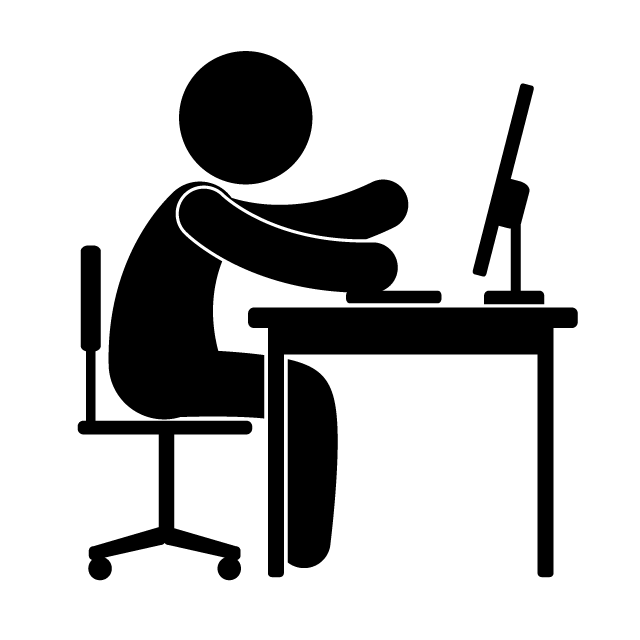

Принципы проектирования
и разработки ПО
|
 |
Роберт Мартин:
5 принципов объекто-ориентированного проектирования "SOLID":
- Принцип единственной ответственности
- Принцип открытости/закрытости
- Принцип подстановки Лисков
- Принцип разделения интерфейса
- Принцип инверсии зависимостей
"Быстрая разработка программ: принципы, примеры, практика", 2004
Бертран Мейер:
5 притериев объекто-ориентированного проектирования:
- Декомпозиция
- Композиция
- Понятность
- Непрерывность
- Защищенность
5 правил объекто-ориентированного проектирования:
- Прямое отображение
- Минимум интерфейсов
- Слабая связность интерфейсов
- Явные интерфейсы
- Скрытие информации
5 принципов объекто-ориентированного проектирования:
- Лингвистические модульные единицы
- Самодокументирование
- Унифицированный доступ
- Открыт-закрыт
- Единственный выбор
"Объектно-ориентированное конструирование программных систем", 2005
«Банда четырёх» (GoF):
Принципы объектно-ориентированного проектирования:
- Программируйте в соответствии с интерфейсом, а не с реализацией
- Предпочитайте композицию наследованию класса
Типичные причины перепроектирования:
- При создании объекта явно указывается класс
- Зависимость от конкретных операций
- Зависимость от аппаратной и программной платформ
- Зависимость от представления или реализации объекта
- Зависимость от алгоритмов
- Сильная связанность
- Расширение функциональности за счет порождения подклассов
- Неудобства при изменении классов
"Приемы объектно-ориентированного проектирования. Паттерны проектирования", 1995
Крэг Ларман:
9 шаблонов распределения обязанностей в программных системах "GRASP":
- Информационный эксперт (Information Expert)
- Создатель (Creator)
- Контроллер (Controller)
- Слабое зацепление (Low Coupling)
- Высокая связность (High Cohesion)
- Полиморфизм (Polymorphism)
- Чистое изготовление (Pure Fabrication)
- Перенаправление (Indirection)
- Устойчивость к изменениям (Protected Variations)
"Применение UML 2.0 и шаблонов проектирования", 2005
Энди Хант и Дэйв Томас:
Принцип разработки программного обеспечения "DRY" ("Don’t repeat yourself"):
- У каждого фрагмента знаний должно быть единственное, недвусмысленное, непререкаемое представление в системе
"Программист-прагматик. Путь от подмастерья к мастеру", 2000
Кент Бек:
Ценности, помогающие достичь совершенства в программировании:
- Взаимодействие
- Простота
- Гибкость
Принципы:
- Локализация последствий
- Минимизация повторений
- Объединение логики и данных
- Симметрия
- Описательные выражения
- Частота изменений
"Шаблоны реализации корпоративных приложений", 2008
Эрик Эванс:
Фундаментальные способы использования модели при разработке программ:
- Модель и арxuтектура программы взаимно определяют друг друга
- Модель лежит в основе языка, на котором говорят все члены группы разработчиков
- Модель - это дистиллированное знание
"Предметно-ориентированное проектирование. Структуризация сложных программных систем", 2011
Манифест Agile:
- Люди и взаимодействие важнее процессов и инструментов
- Работающий продукт важнее исчерпывающей документации
- Сотрудничество с заказчиком важнее согласования условий контракта
- Готовность к изменениям важнее следования первоначальному плану
"Agile-манифест разработки программного обеспечения", 2001
Манифест мастерства разработки:
- Не только рабочий софт, но также и хорошо разработанное программное обеспечение
- Не только реагируя на изменения, но также постоянно добавляя ценность
- Не только личности и взаимодействия, но и сообщество профессионалов
- Не только сотрудничество с клиентами, но и продуктивное партнерство
"Manifesto for Software Craftsmanship", 2009
Принципы Spring Framework
- Обеспечьте выбор на каждом уровне
- Учитывайте разные точки зрения
- Поддерживайте сильную обратную совместимость
- Заботьтесь о дизайне API
- Установите высокие стандарты качества кода
Документация по Spring Framework 5.3.14
Принцип Java
- Написано однажды, работает везде
Джеймс Гослинг, 1995
Приёмы экстремального программирования
- Разработка через тестирование
- Игра в планирование
- Заказчик всегда рядом
- Парное программирование
- Непрерывная интеграция
- Рефакторинг
- Частые небольшие релизы
- Простота проектирования
- Метафора системы
- Коллективное владение кодом
- Стандарт оформления кода
- 40-часовая рабочая неделя
Кент Бек "Экстремальное программирование", 2002
Фредерик Брукс
- Ни в одной технологии или в управленческой технике не существует универсального метода, увеличивающего на порядок производительность, надёжность и простоту
"Серебряной пули нет", 1986
|